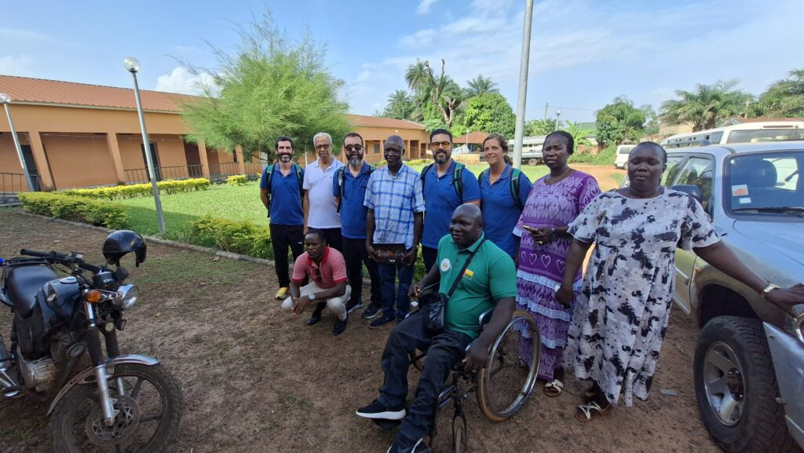

Ensino pré-escolar
Uma das respostas educativas do campus, prevista desde a conceção da escola em 2014.
Pré-escolar, ensino regular e formação profissional para crianças e jovens surdos, com a língua gestual no centro.
Níveis de ensino
Concebida para assegurar respostas educativas a crianças e jovens surdos — incluindo ensino pré-escolar, ensino regular e formação profissional —, com conteúdos adaptados à aprendizagem visual e à língua gestual.
Uma das respostas educativas do campus, prevista desde a conceção da escola em 2014.
Percurso escolar para crianças e jovens surdos, no campus de Ponta Gardete.
Inclui a unidade de produção de blocos (desde 2022) e o uso da sala de informática.
60 lugares (30 rapazes e 30 raparigas) para alunos de diferentes regiões da Guiné-Bissau.
Projetos
Iniciativas da escola para a formação, o emprego, a tecnologia e o acesso de alunos de todo o país.

Formação e emprego
Desde julho de 2022, a escola acolhe uma unidade de produção de blocos para a construção civil, liderada por um grupo de dez jovens. O projeto foi apoiado pela Enabel, com formação em colaboração com a União Europeia, no âmbito do programa RESET (Relançamento do Ensino, Formação Técnica e Profissional para o Emprego).
Para o arranque, a Enabel disponibilizou máquina de produção de blocos, betoneira, carrinhos de mão, mangueira, pás, cimento, cascalho e areia. A sustentabilidade fica a cargo do grupo, que abastece o mercado de Bissau e arredores. O grupo foi solicitado a produzir cinco mil blocos a partir de agosto de 2022.
O diretor Augusto José Lopes sublinhou que deficiência não significa falta de capacidade e que o projeto é um desafio e um motivo de orgulho para a instituição. O porta-voz do grupo, Luís Gomes Correia Júnior, destacou a vontade de formar outros colegas e de garantir inserção no mercado de trabalho.

Tecnologia
Em outubro de 2026, a Ecobank Guiné-Bissau entregou dez computadores e inaugurou a sala de informática reabilitada da escola, reforçando o acesso dos alunos às tecnologias de informação e comunicação. A direção do Ecobank apelou aos alunos para utilizarem plenamente este espaço.

Acesso
Está prevista a abertura de um internato com capacidade para 60 crianças — 30 rapazes e 30 raparigas — provenientes das diferentes regiões da Guiné-Bissau. O objetivo é facilitar o acesso à educação de quem vive longe de Bissau e não tem condições de alojamento na capital.
Campus
O campus de cerca de 7 058 m² inclui salas de aula, biblioteca, sala de informática, espaços de formação profissional, jardim infantil, refeitório e dormitórios. Em 2026 a sala de informática foi reabilitada com equipamentos da Ecobank.
Visitar a escolaParcerias
Parceiros referidos em fontes públicas.
Apoio à construção do campus inaugurado em 2014.
Apoio ao projeto de produção de blocos (programa RESET), em 2022.
Entrega de dez computadores e reabilitação da sala de informática (2026).
Visita no âmbito da Rede Lusófona de Mentoria Paralímpica (2026).
Dirija-se à escola em Ponta Gardete, Bissau, ou envie uma mensagem pela página de contacto.
Contactar a escola